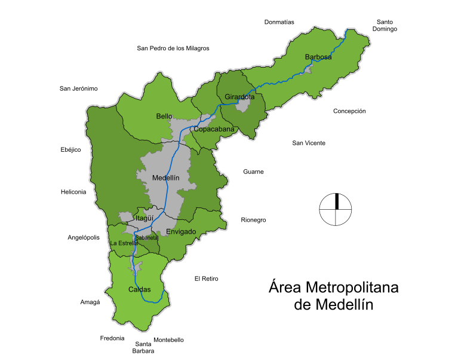

¿Dónde queda?
El Valle de Aburrá es una subregión ubicada en el centro-sur del departamento de Antioquia, Colombia, en medio de la Cordillera Central de los Andes. Forma parte de la cuenca natural del río Medellín
El Valle de Aburrá es una subregión ubicada en el centro-sur del departamento de Antioquia, Colombia, en medio de la Cordillera Central de los Andes. Forma parte de la cuenca natural del río Medellín